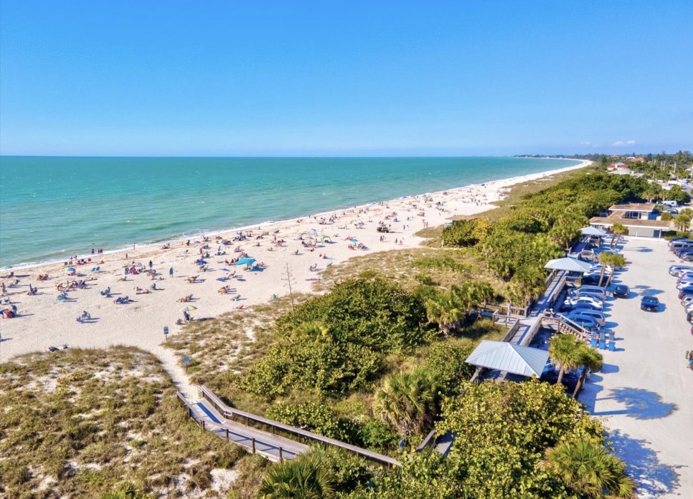
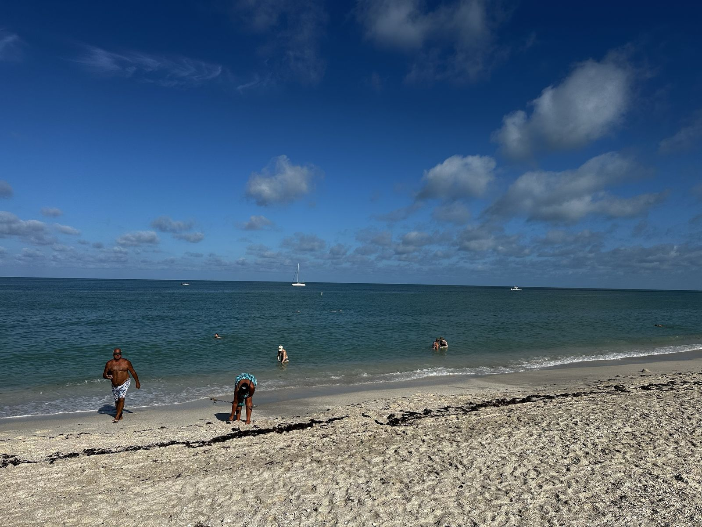
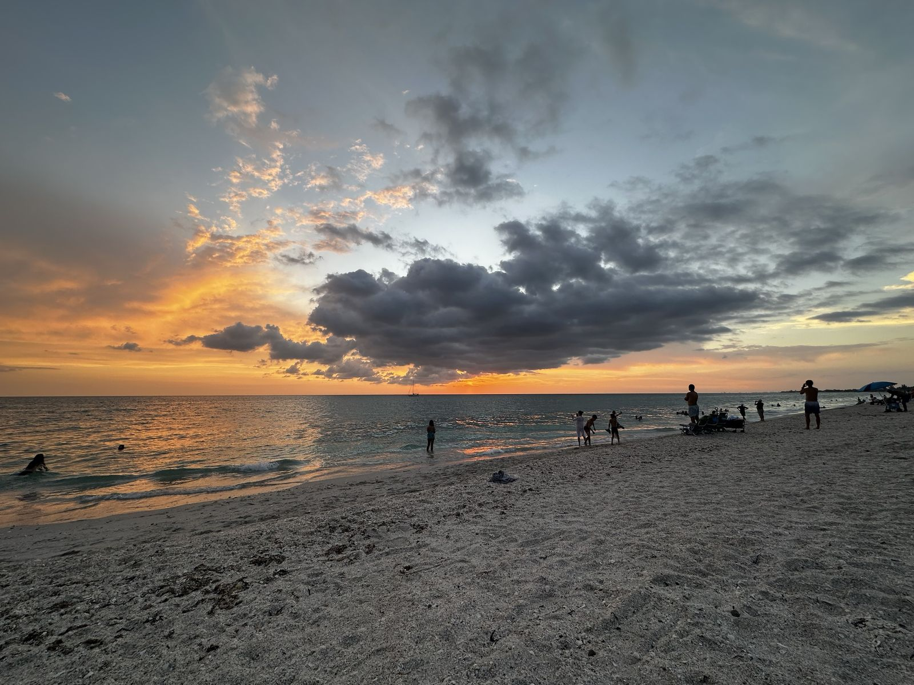
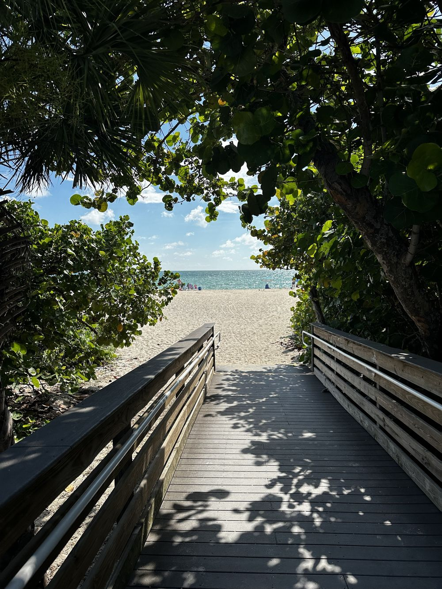

Gulf Surf Desk
Florida's Gulf coast, Pensacola to Naples, Siesta Key included. Wind, wave height, water temperature, and the marine forecast, straight from the buoys and the National Weather Service. No star ratings, no ads, every number traceable to a station ID.
–
Forecast · seas and wind by period
All spots · right now
| Spot | Wind | Shore | Waves | Water | Next 2 days |
|---|
Wind from the nearest reporting station; waves and water from the nearest buoy, which on this coast can sit 30 to 100 miles out. Tap a row to load that spot. "Next 2 days" is the highest forecast sea range across the next four periods.

How to read it
Seas in a marine forecast are significant wave height: the mean of the highest third of the waves, measured offshore. Beach-face surf is usually smaller than the seas number, and on the Gulf it needs a period of 6 seconds or more before it organizes into rideable lines. Wave Detail is the forecaster's swell breakdown: direction the energy comes from, height, and period.
Offshore means the wind is blowing from the land toward the water, which grooms the face; onshore blows from the Gulf onto the beach and crumbles it. The tag is computed from the wind direction against the compass bearing each beach faces.
Observations: NOAA National Data Buoy Center (ndbc.noaa.gov) and CO-OPS tide stations (tidesandcurrents.noaa.gov). Forecasts: NWS Coastal Waters Forecasts from the Mobile, Tallahassee, Tampa Bay, and Miami offices. Units converted once at build time: m/s to knots, meters to feet, °C to °F.

